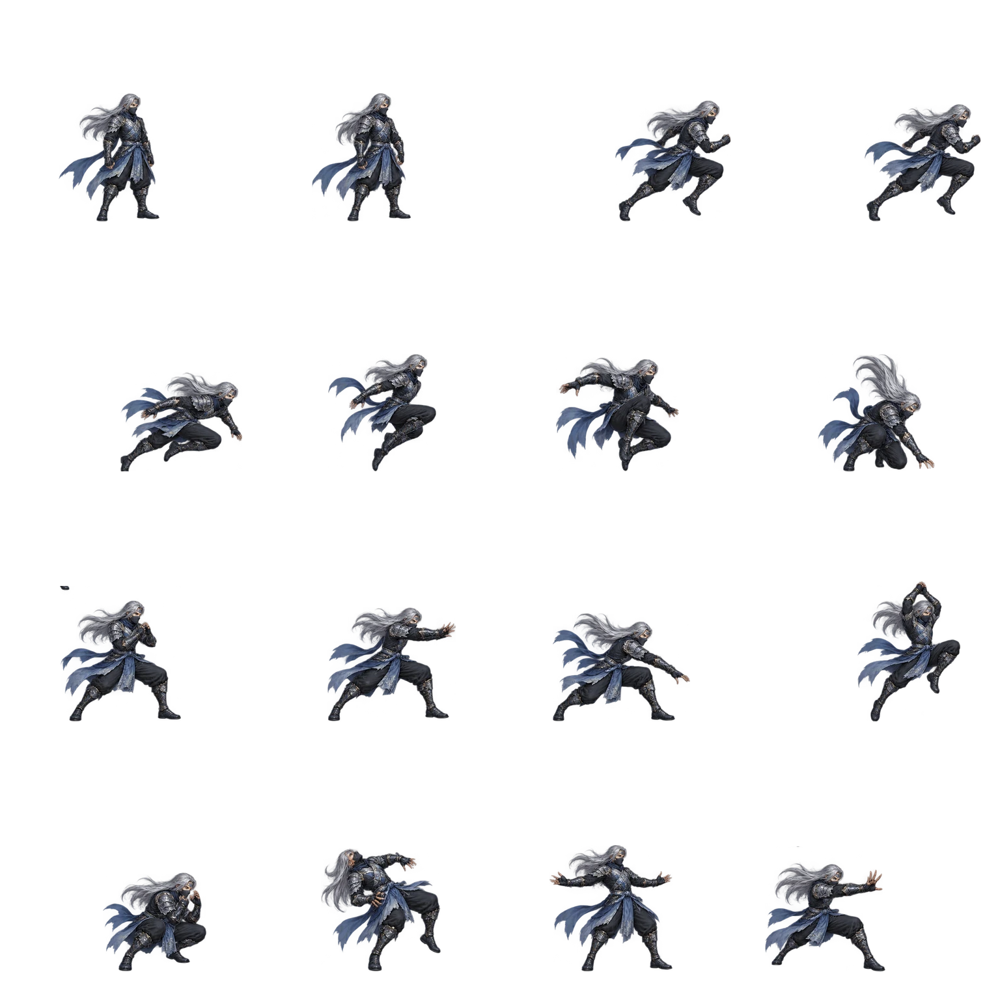
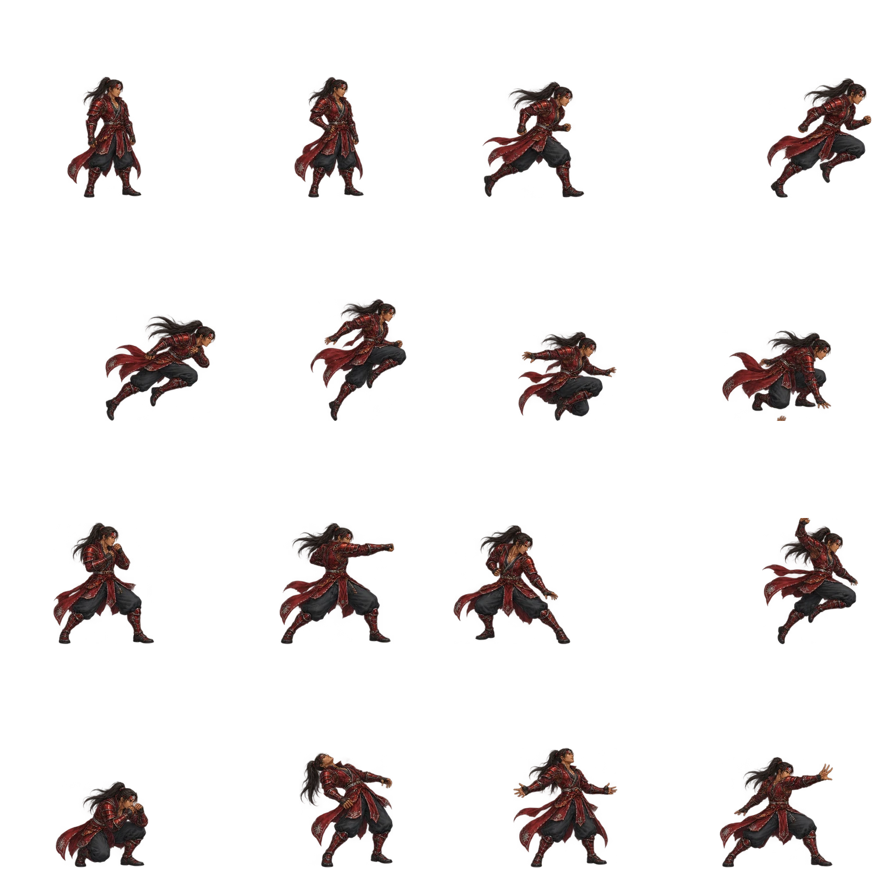

Northern Echoes


Silent’s armor is failing. Winta’s rescue order never arrived. Three encounters connect their search to the theft of the Skyglass Heart.
Fixed story kits. Chapter progress saves on this device. No profile rewards yet.